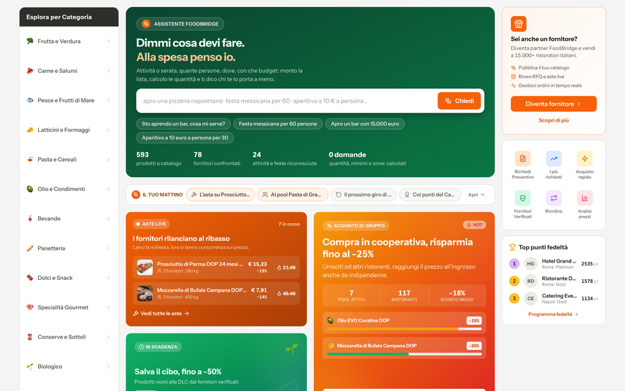

Bayran Cleaner
Pulizia onesta per il tuo Mac.
macOS · gratuito
Vai →

Bayran Office
I tuoi documenti. Solo tuoi.
iOS · Android
Vai →

Bayran Nimbus
Simula eventi catastrofici su un globo 3D.
Web
Vai →

FoodBridge
Marketplace B2B per ristoranti e forniture.
Showcase
Vai →
In arrivo
BayranWinCleaner
Pulizia onesta per il tuo PC.
Windows
FaReSy
Riconoscimento facciale con revisione umana obbligatoria.
Showcase
Vai →